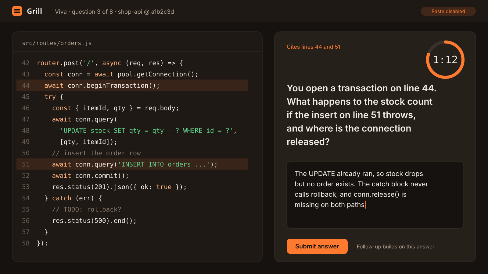

CSC413 · Section B · viva day
Know your viva before it starts.
Grill asks 8 timed questions about your own repo, each citing a real file and line, then sets a small change request that hidden tests grade in a sandbox. Check in below, watch the 42-second tour, and see what a skill report looks like.
Viva window open · closes 13 Nov, 23:59

Check in for your viva Review your cohort
How the clock behaves
Each question gets 90 seconds135 seconds (your extra time). The ring turns amber for the last 30 seconds, and the time is always written as text too.
This demo clock runs in real time. Turn on "reduce motion" in your OS to see the still version.
42-second tour of a viva
Video · 42 s · about 0.45 MB. Captions on by default.
Read the transcript
Student: I'm submitting my shop-api repo, main branch.
Grill: Pinned at commit a1b2c3d. Every question will cite this exact code.
Grill: I found a transaction with no rollback. Writing eight questions about your own lines.
Grill: You open a transaction on line 44. If the insert on line 51 throws, what happens to the stock count?
Student: The UPDATE already ran, so stock drops but no order row exists. [Timer beeps three times: 10 seconds left.] And conn.release() is missing on both paths.
Grill: Change request: a failed order must leave the stock unchanged. Always release the connection. [Chime] Hidden tests in the sandbox: 4 of 5 passed.
Grill: Viva 82, provisional. Your examiner confirms or overrides it.
Sample report
Viva skill report · Student 01
Printing this page gives you just this report on A4.
- Repo
- student01/shop-api
- Commit
- a1b2c3d (main)
- Cohort
- CSC413 · Section B
- Sat
- 10 Nov 2026, 10:05–10:47
Viva
82/100
Hidden tests
4/5
Viva time used
11:04 of 12:00
Ask for a re-check
Tell Dr. Rao which question you think was misjudged, quoting your answer. Re-checks go to the examiner, not back to the AI, and every change is logged.
Questions
Hover or tab to a question to see why it got its verdict. Each verdict's reason is shown under the answer.
-
src/db/pool.js · 3–12 Strong
Why does the pool set
connectionLimit: 10, and what happens to request 11?It queues until a connection is released; it doesn't fail unless the queue limit is hit.
Why: Correct queueing behaviour, and named the queueLimit option without being asked.
-
src/routes/items.js · 18–27 Strong
This route builds SQL with
?placeholders. What attack does that stop?SQL injection, because the driver sends the values separately from the query text.
Why: Right attack and the right mechanism.
-
src/routes/orders.js · 42–58 Partial
You open a transaction on line 44. If the insert on line 51 throws, what happens to the stock count, and where is the connection released?
The UPDATE already ran, so stock drops but no order exists. The catch never calls rollback, and conn.release() is missing on both paths.
Why: Found both bugs, but in the follow-up said the stock is restored when the connection closes, which isn't true while the transaction is still open.
-
What does this middleware send back when the token has expired, and why that status code?
401, because the client isn't authenticated any more. 403 would mean "logged in but not allowed".
Why: Correct code and a clear 401 vs 403 distinction.
-
src/app.js · 30–36 Partial
Your error handler is registered before the routes. Which errors will it never see?
Errors thrown inside the routes, because Express runs middleware in order.
Why: Right idea, but didn't notice that async errors also need to be passed to next().
-
src/services/cart.js · 40–52 Missed
Two requests add the last item to two carts at once. Which line lets both succeed?
Why: The timer ran out. A good answer points to line 44, which reads stock before writing it without a lock.
-
package.json · 6–9 Strong
What does
npm testactually run here?node --test on the test folder, the built-in runner, no Jest.
Why: Exact.
-
src/routes/orders.js · 60–74 Strong
GET /orders has no LIMIT. What breaks first as the table grows?
Response time and memory, since every row is loaded and serialised. I'd add page and limit query params.
Why: Identified the cost and proposed a fix.
Change request · hidden tests
Task: make a failed order leave stock unchanged and always release the connection.
| Test | Result | Time |
|---|---|---|
| rolls back stock when insert fails | Pass | 41 ms |
| releases connection on success | Pass | 12 ms |
| releases connection on error | Pass | 15 ms |
| returns 409 when stock is short | Fail · got 500 | 9 ms |
| Sandbox: no network, non-root, 30 s limit, destroyed after the run. | ||
| existing order routes still pass | Pass | 88 ms |
Before you start
Why is paste disabled?
The viva checks that you can explain your code in your own words. Follow-up questions build on what you just wrote, so a pasted answer usually falls apart one question later.
My repo has no tests. Is that a problem?
No. Grill brings its own harness on node:test and calls your exported functions or HTTP routes directly.
Python waiting list
Python support is planned after the first release. Ask Dr. Rao to add your name; until then you can sit the viva on a JavaScript project.